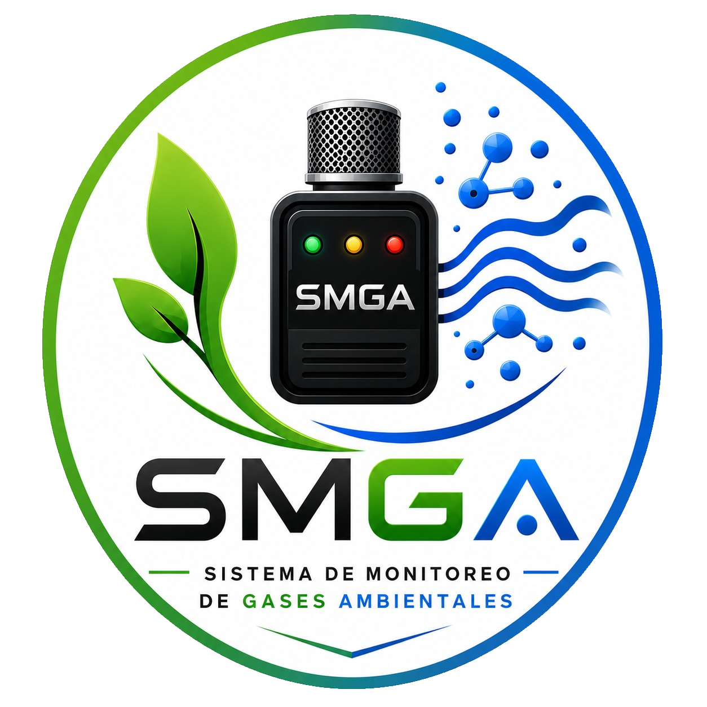

Detector de gases.
Detecta la presencia de determinados gases ambientales.
Ver más

Nos dedicamos al monitoreo y control de la calidad del aire mediante soluciones tecnológicas.
La calidad del aire es un factor fundamental para el bienestar de las personas y el cuidado del medioambiente. La presencia de determinados gases y contaminantes en ambientes cerrados puede afectar las condiciones del aire y generar situaciones que es importante detectar. Sin embargo, muchas veces las personas no cuentan con una herramienta sencilla y económica que les permita conocer de manera rápida cuándo la calidad del aire puede estar empeorando.
Nuestra empresa, SMGA, tiene como objetivo desarrollar y ofrecer una solución tecnológica accesible que permita monitorear de manera sencilla las condiciones generales del aire en diferentes ambientes, contribuyendo a la prevención y concientización sobre la contaminación ambiental. Buscamos que nuestro producto pueda ser utilizado en hogares, instituciones educativas, comercios y otros espacios donde sea importante conocer el estado del aire. De esta manera, pretendemos ofrecer una alternativa económica que ayude a las personas a prestar mayor atención a la calidad del ambiente en el que se encuentran.
Para cumplir con este objetivo, desarrollamos el SMGA (Sistema de Monitoreo de gases ambientales), un dispositivo basado en un Arduino Nano y un sensor MQ-135, capaz de detectar variaciones en la presencia de determinados gases y generar una indicación visual y sonora. El sistema utiliza tres luces LED para representar diferentes niveles de detección: verde para un nivel normal, amarillo para un nivel moderado y rojo para un nivel elevado, acompañado por una alerta mediante un buzzer cuando se alcanza el nivel más alto establecido por el sistema.
Con nuestro proyecto también buscamos promover la conciencia sobre la importancia de la calidad del aire y demostrar cómo la tecnología puede utilizarse para abordar problemáticas ambientales de nuestra comunidad y sus alrededores.
Detecta la presencia de determinados gases ambientales.
Ver más

Director ejecutivo y desarrollador de Software.
Programador web, gerente de sistemas y tecnologias.
Secretario y gerente administrativo.
Controller financiero e ingeniera de impresion 3D.
Asistente administrativa y ensambladora.